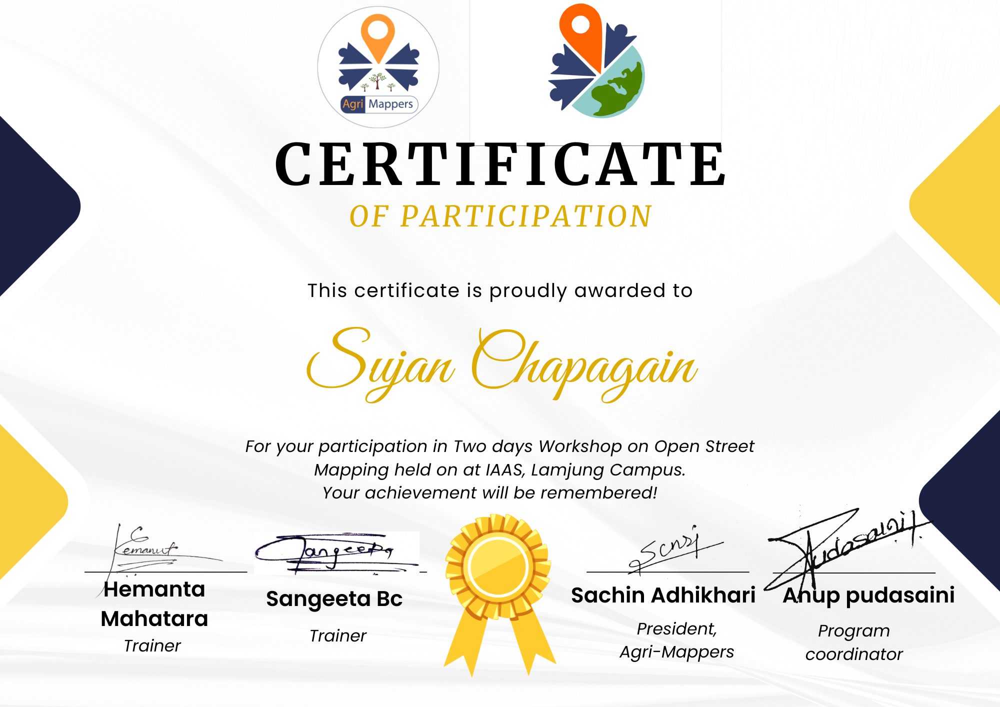
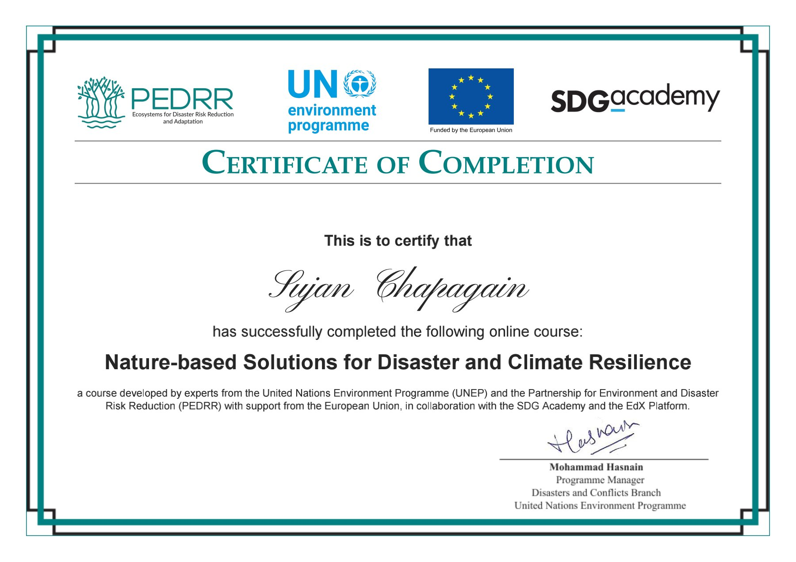

Integrated Spatial Planning
Framework linking ecological, economic, and social dimensions for sustainable land management.

OpenStreet Mapping
An open-source mapping initiative that democratizes geospatial data for community empowerment.

MOCC Awareness Campaign
Campaign focusing on climate awareness, resilience, and sustainable solutions through visuals.

Leadership in Climate Action
Explores the role of youth leadership in climate justice and sustainable development initiatives.

Finance to Nature
Innovative finance models channeling investments into biodiversity conservation and agroecology.